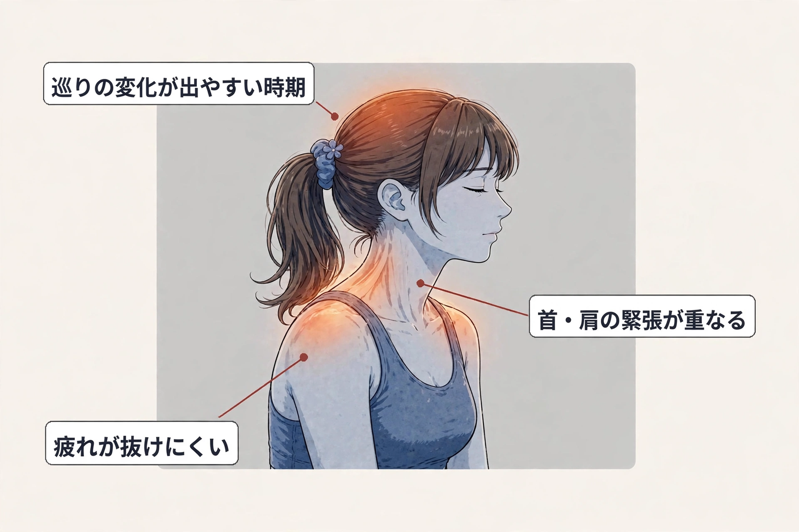

更年期のほてり・不調
美容整体ステラ・ポラリス東三国｜大阪市淀川区東三国・東三国駅徒歩5分・女性向け

ほてりと張りつめた体を、ゆるめて整える大人のケア
急に顔がほてる、首もとに汗をかく、体が張りつめて休まらない——更年期と呼ばれる時期には、ホルモンの変動に伴うさまざまな変化を感じやすくなります。ほてりや発汗に加えて、肩や背中の固さ、体の重さを感じる方も少なくありません。このページでは、更年期のほてりの背景にある体の仕組みと、体をゆるめて穏やかに過ごすことを目指す当サロンでのケア、ご自宅でできるセルフケアをご案内します。更年期の不調は、周囲に理解されにくく、一人で抱え込みがちな悩みでもあります。体の変化の時期だからこそ、自分のペースで整える時間を持つことが大切です。
ご予約はこちら（Coubic）こんなお悩みありませんか
- 急に顔や首もとがほてって、汗をかくことがある
- ほてりのあと、体がどっと疲れる感じがする
- 肩や背中が張りつめて、力を抜きにくい
- 体が重く、やる気が出ない日がある
- 手足は冷たいのに、顔だけほてることがある
- 人前でほてるのが気になって、外出が億劫になる
- 温めすぎるとほてり、冷やすと冷える、調整が難しい
当てはまる項目が多いほど、更年期の体の変化に、姿勢の崩れや体の緊張が重なっている目安とされています。この時期のケアは、体の波に合わせてゆるめることが基本です。次のセルフチェックで、体の力みの傾向を確かめてみましょう。
簡単セルフチェック（体の力みチェック）
椅子に座って、肩とあごの力の抜け具合を確かめる簡単な方法です。
- 椅子に座り、両肩を一度上げてから、ストンと下ろします。
- あごの力を抜き、上下の歯の間にすき間があるかを確認します。
- 肩がすぐ上がってしまう、あごに力が入りやすい場合は、体が緊張モードのままになっている目安と言われています。
※これは診断ではありません。ご自身の状態の傾向を知る目安としてお使いください。
更年期のほてり・不調の原因と仕組み
ホルモンの変動と体温調節
更年期は、女性ホルモンの分泌が大きく変動する時期です。この変動は体温調節の働きにも関わり、急なほてりや発汗として現れることがあると言われています。図1のように、顔や首もとに熱が集まる感じは、この時期に多い訴えの一つです。現れ方には個人差が大きく、自分の波のパターンを知ることが大切です。

図1 更年期に起こりやすいほてりの状態と、落ち着いた状態のイメージ。体の状態には個人差があります。
自律神経との関わり
体温調節や発汗は、自律神経の働きとも深く関わります。緊張が続く生活では体の切り替えがうまくいかず、ほてりと冷えが同時に出るなど、調整の難しさを感じやすくなります。体の緊張をゆるめることは、切り替えの土台づくりにもつながります。ほてりの出方には波があり、緊張や疲れが重なった日に強く出やすいと感じる方もいます。体をゆるめる時間は、波との付き合い方の一つになります。
顔はほてるのに手足は冷える理由
ほてりがある一方で、手足の冷えを感じる方は少なくありません。体の中心に熱がこもり、末端まで巡りが届きにくい状態では、このようなアンバランスが起こりやすいと言われています。全身の巡りを助ける視点が、この時期のケアには大切です。
姿勢と体の張りつめ
体の変化に戸惑う時期は、無意識に体が張りつめ、肩や背中が固まりやすくなります。姿勢が丸まると胸が閉じ、熱がこもる感じも強くなりがちです。姿勢を整えて胸を開くことは、ほてりの感じ方にも関わってきます。
セルフケアで足りる場合・サロンケアが向く場合
ほてりの波が小さく、体をほぐしたり休んだりすると落ち着くことが多い場合は、まずご自宅でのセルフケアを続けて様子を見る方法があります。一方で、体の張りつめが強く自分ではゆるめにくい、全身が固まって重い、ほてりと冷えのアンバランスが気になるという場合は、サロンでのケアが向いている目安になります。サロンでは、全身をゆるめて巡りを助け、施術後に「体が軽い」「気持ちが落ち着く」と感じやすい状態を目指します。症状が強い場合は、医療機関への相談もあわせてご検討ください。その日の体調に合わせて、触れる部位や強さを調整しながら進めます。
当サロンでのケア
当サロンの更年期ケアは、「張りつめた全身をゆるめ、巡りのバランスを整える」ことを目指す組み立てです。まず姿勢と体の力み具合を一緒に確認し、部位と目的に合わせて3つの手技を組み合わせます。
美容整体：背骨のラインと姿勢の軸を整え、胸が開いて熱がこもりにくい土台をつくることを目的に。縮こまった体を伸ばすお手伝いをします。
アロマオイルマッサージ：背中から全身をオイルでゆるめ、巡りが流れやすい状態を目指します。穏やかな香りで、気持ちまでゆるむ時間を大切にしています。
もみほぐし：張りつめやすい肩や背中、首まわりをほぐし、体の力みが抜けていく感覚を目指して進めます。
ケアを通して目指すのは、こんな変化です。
- 全身の張りつめがゆるみ、体が軽く感じる状態へ
- 胸が開いて、息が深くしやすい感覚へ
- 手足の先まで、温かさが巡るような感覚へ
- 肩や首まわりがゆるんで、ほてりの波をやり過ごしやすい状態へ
- この時期の体との付き合い方を知り、穏やかに過ごすきっかけへ
施術の仕上げには、ほてりを感じたときの体のほぐし方や、冷えとほてりの両方に配慮した温め方もお伝えします。この時期の体は、がんばりすぎず、波に合わせて整えることが大切です。完全個室のため、周りを気にせずゆったりお過ごしいただけます。変化の時期は、頑張る量を調整することもケアの一つです。休むことを予定に入れてください。

施術の流れ
ご来店後、気になる部位やお悩み、ご希望の強さなどをうかがいます。完全個室のため、周りを気にせずお話しいただけます。
姿勢の軸や体の力み具合、肩や背中の張りなどを一緒に確認し、その日の状態に合わせた施術の進め方をご案内します。
美容整体を中心に、ご希望に応じてアロマオイルマッサージ、もみほぐしを組み合わせて進めます。強さは途中でも調整できます。
施術後の状態を確認し、ご自宅で続けやすいセルフケアのポイントをお伝えします。次回の目安についても、ご希望があればご案内します。
料金
| コース | 通常価格 | キャンペーン価格（12/25まで） |
|---|---|---|
| 80分 | 8,000円 | 3,000円 |
| 100分 | 10,000円 | 4,000円 |
| 120分 | 12,000円 | 5,000円 |
クリスマスキャンペーンは12月25日まで、ご新規様もリピーターの方も対象です。施術内容は当日の状態とご希望に合わせて組み立てます。
ご自宅でできるセルフケア
- 首もとを冷やす工夫：ほてりを感じたら、首もとに冷たいタオルを当てます。熱が集まりやすい場所を冷やすと、落ち着きやすくなります。
- 肩の上げ下げ：両肩を上げて5秒キープし、ストンと下ろします。体の力みを抜く感覚を覚える体操で、5回が目安です。
- 足元を温める：顔がほてる日でも、足元は冷えていることがあります。靴下やレッグウォーマーで足元を温めてください。
- 胸を開く深呼吸：胸を開いてゆっくり息を吐きます。吐く息を長めにすることで、体の緊張がゆるみやすくなります。
ご自宅でのケアに：セルフケア資料ライブラリ（無料）
このお悩みに合わせたセルフケアの考え方を、無料の資料ライブラリでご紹介しています。
セルフケア資料ライブラリを開く →
受診の目安
ほてりや発汗のほか、動悸や息苦しさ、気分の落ち込みなどが強く続く場合は、施術の前に医療機関への受診をおすすめします。更年期の症状には個人差が大きく、医療機関での相談が大切なことがあります。気になる症状があるときは、まず医療機関でご相談ください。
よくある質問
Q. 初めてでも大丈夫ですか？
はい。当サロンは完全予約制・完全個室で、1日3組までのご案内です。最初にカウンセリングで体の状態やお悩みをうかがい、無理のない内容から始めます。施術の前後で「体が軽くなった」「気持ちが落ち着いた」といった感覚の違いを一緒に確認しながら進めますので、初めての方も安心してご利用いただけます。
Q. 施術は痛いですか？
強さは、ご希望をうかがいながら調整します。張りつめた体を無理にほぐすのではなく、心地よいと感じる圧を基本に進めます。感じ方には個人差がありますので、施術中も遠慮なくお声がけください。
Q. コースはどう選べばいいですか？
80分・100分・120分のコースがあり、ケアしたい部位の広さやお時間のご都合に合わせて選べます。全身をゆっくりゆるめたい方には、120分が選ばれることが多いコースです。迷われる場合は、ご予約の際にお気軽にご相談ください。
Q. 場所と予約方法を教えてください。
大阪市淀川区東三国、東三国駅から徒歩5分です。完全予約制のため、予約サイト（Coubic）またはLINE公式アカウントからご予約をお願いしています。
Q. 男性も受けられますか？
当サロンは女性向けのため、男性の方は、同じ東三国の男性専用整体院「北辰堂」をご案内しています。
施術者について
平賀建人（施術歴30年）
鍼灸師・登録販売者・アロマセラピスト・パーソナルトレーナーの資格を持ち、美容整体を中心に、アロマオイルマッサージ、もみほぐしを、その日の状態とご希望に合わせて組み合わせて施術します。このページの内容は、施術者の知識と経験をもとに作成しています。

料金・ご予約
ご新規様もリピーターの方も 12/25まで
80分 3,000円／100分 4,000円／120分 5,000円
通常価格は80分8,000円／100分10,000円／120分12,000円です。施術内容はご希望に合わせて組み立てます。
営業時間：月〜土 17:00〜23:00／日 10:00〜23:00（完全予約制）｜電話：080-2468-3086
大阪府大阪市淀川区東三国2丁目25番4号101（東三国駅徒歩5分）